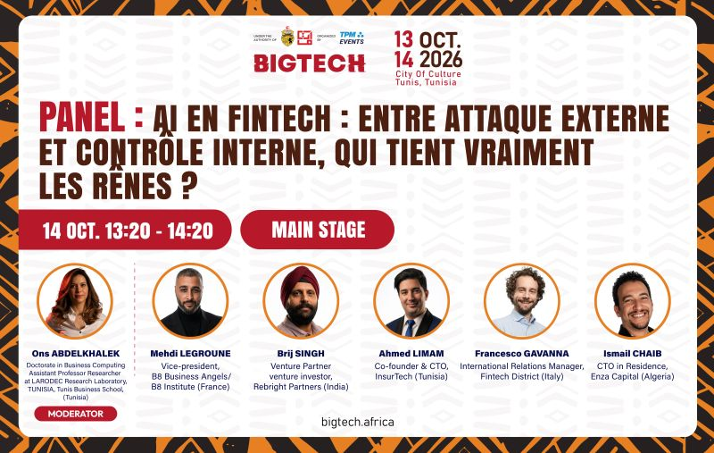
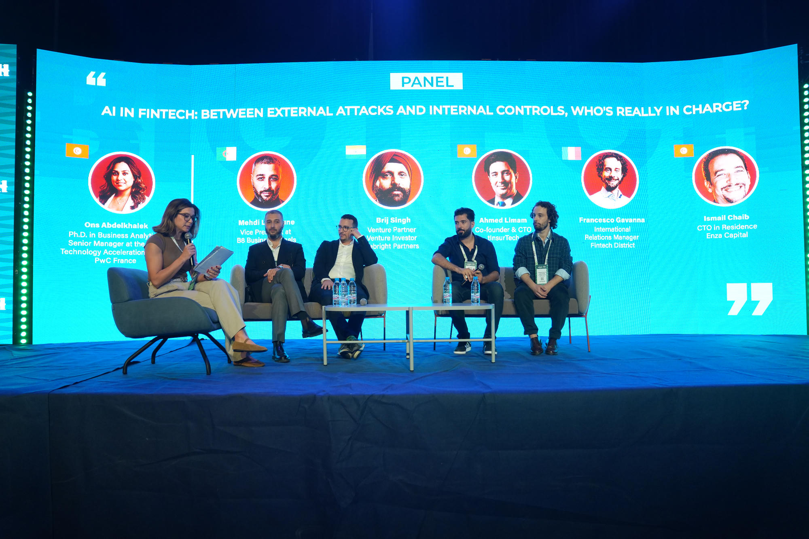
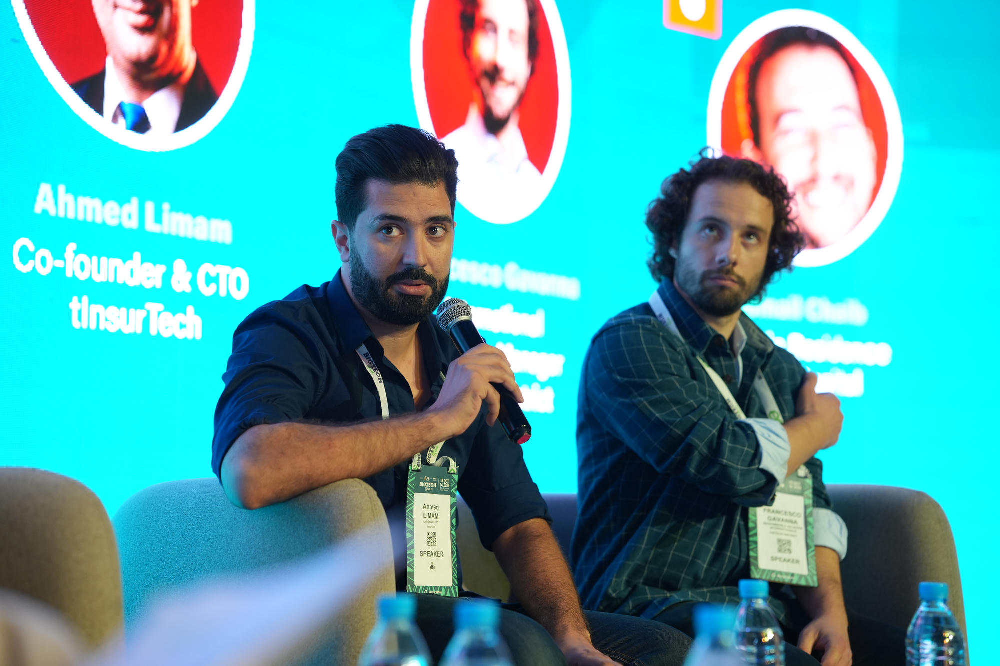
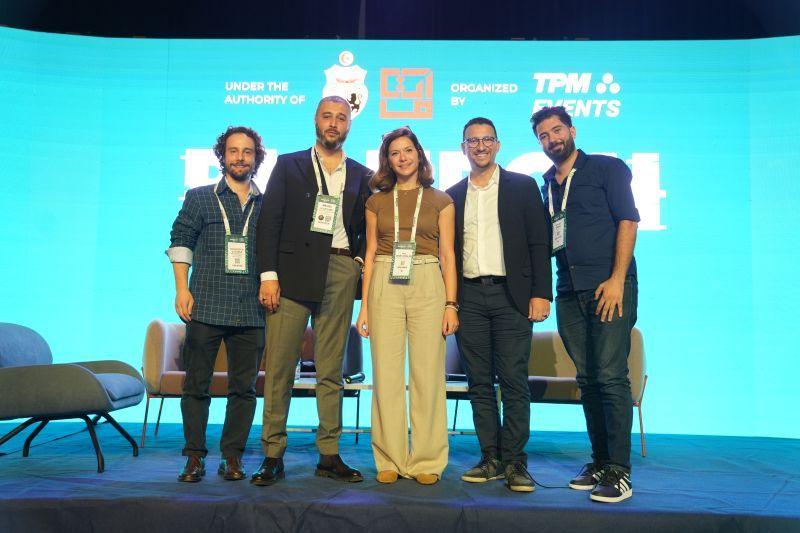

AI in FinTech: Between External Attacks and Internal Control, Who's Really in Charge?
The Main Stage question at BIGTECH Africa 2026 wasn't about AI adoption. It was about who keeps control when AI attacks and defends at the same time.

I had 40 seconds to make a point on the Main Stage at the Cité de la Culture.
So I put two ECB numbers on the screen and let the room go quiet.
+300% fraud increase in 2024. +2000% using virtual cameras and deepfakes.
That is not a trend. That is a regime change.
For the past decade in FinTech and InsurTech, we built higher walls. Better document verification. Better face match. Better liveness. It worked, until AI learned to climb.
Today, an attacker doesn't break your KYC. He becomes your KYC. With a virtual camera, he injects a perfect deepfake face that passes liveness. With generative AI, he creates an ID that passes OCR. With an agent, he mimics human hesitation, typing speed, and mouse movement.
At that point, prevention is a nostalgic idea.
That was the core of the panel I had the honor to join at BIGTECH Africa 2026 — AI in FinTech: Between External Attacks and Internal Control, Who's Really in Charge? — moderated by Ons Abdelkhalek, PhD, alongside Mehdi Legroune, Brij Singh, Francesco Gavanna, and Ismail Chaib.
Everyone agreed: the real battle is no longer at the perimeter. It's inside the session.

From Prevention to Classification
At InsurTech Tunisia, we stopped asking "Is this document real?" a year ago. We now ask "Is this behavior real?"
Here is what that means in production:
We stopped trusting the frame. We trust the behavior.
Our Behavioral Risk Engine doesn't look at a single selfie. It looks at 800 signals across the session: how the device sensor moves when you hold it, how the browser renders WebGL, the micro-latency between permission grant and camera stream start — the signature of an injected virtual camera. A real human is noisy and imperfect. A deepfake injection is too perfect, too fast.
We replaced binary decisions with classification.
Fraud / Not Fraud is a false binary that kills good customers. We classify every session into dynamic risk tiers. Low-risk: frictionless. Medium-risk: silent step-up. High-risk: human-in-the-loop. This is how you keep trust without killing conversion. It's not about blocking more. It's about understanding better.
We keep the human in charge.
This was the other half of the panel question, internal control. If AI makes the final call, who is accountable? Our position is clear: AI proposes, human disposes. Every high-risk decision in our stack is explainable, auditable, and reversible. Maturity is not how much AI you deploy. It's how well you govern it.

Why we showed this at BIGTECH
BIGTECH Africa is not a tech fair. It's where Africa decides how it wants to build.
For Tunisia, the opportunity is specific. We are not going to win by copying Silicon Valley's models. We win by building infrastructure for African realities: mobile money as primary rail, intermittent connectivity, French/Arabic/English journeys, and a regulator that wants inclusion, not just innovation.
That is what we demoed on the sidelines of the Main Stage: a Trust-as-a-Service layer that any insurer, bank, or fintech can embed via API in a day, built in Sfax, hardened for Africa, designed to export.
The conversations we had with groups from Algeria, Senegal, and Côte d'Ivoire after the panel confirmed one thing: the market doesn't need another verification widget. It needs a behavioral trust fabric.
That is what we are building.

Thank you to the BIGTECH Africa team, to Ons for the sharp moderation, and to my fellow panelists. The best part of the Main Stage is what happens after, when you realize everyone is fighting the same invisible enemy.
We will keep building the tools to see it.